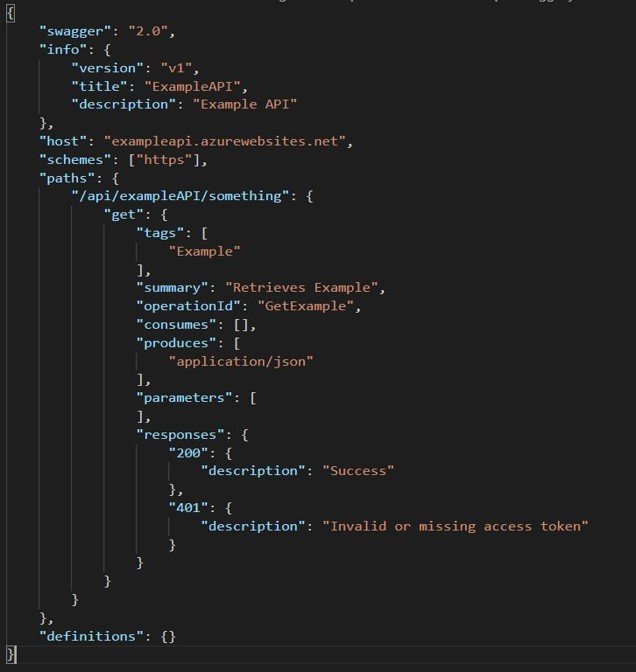
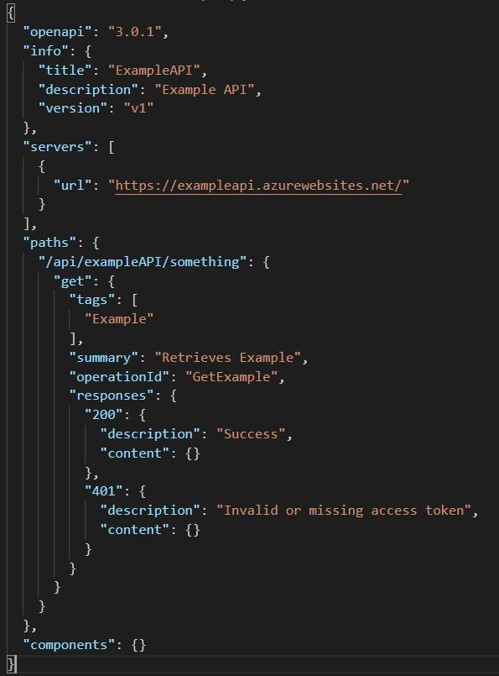

https://eun-su1.azuredatacatalog.com/#/home
Client-Server Architecture
Statelessness:
Cacheability:
Layered System
Uniform Interface:
OAS2.0: Swagger
|  |
V2: Swagger
OAS3.0:
|  |
V3:
Main Components:
Gateway
Developer Portal
Do not use Virtual Machines!
TODO
Part 1:
Part 2:
| Space | Forward |
|---|---|
| Right, Down, Page Down | Next slide |
| Left, Up, Page Up | Previous slide |
| G | Go to slide number |
| P | Open presenter console |
| H | Toggle this help |